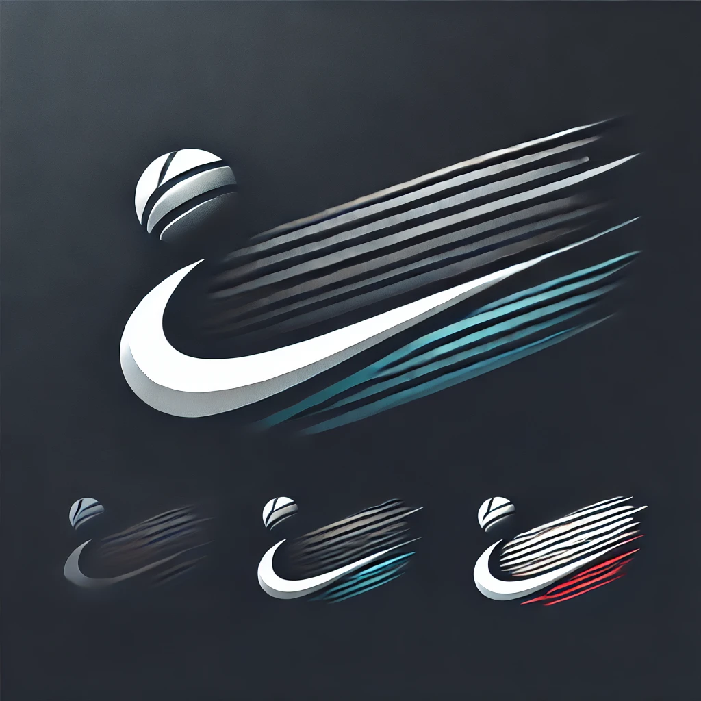
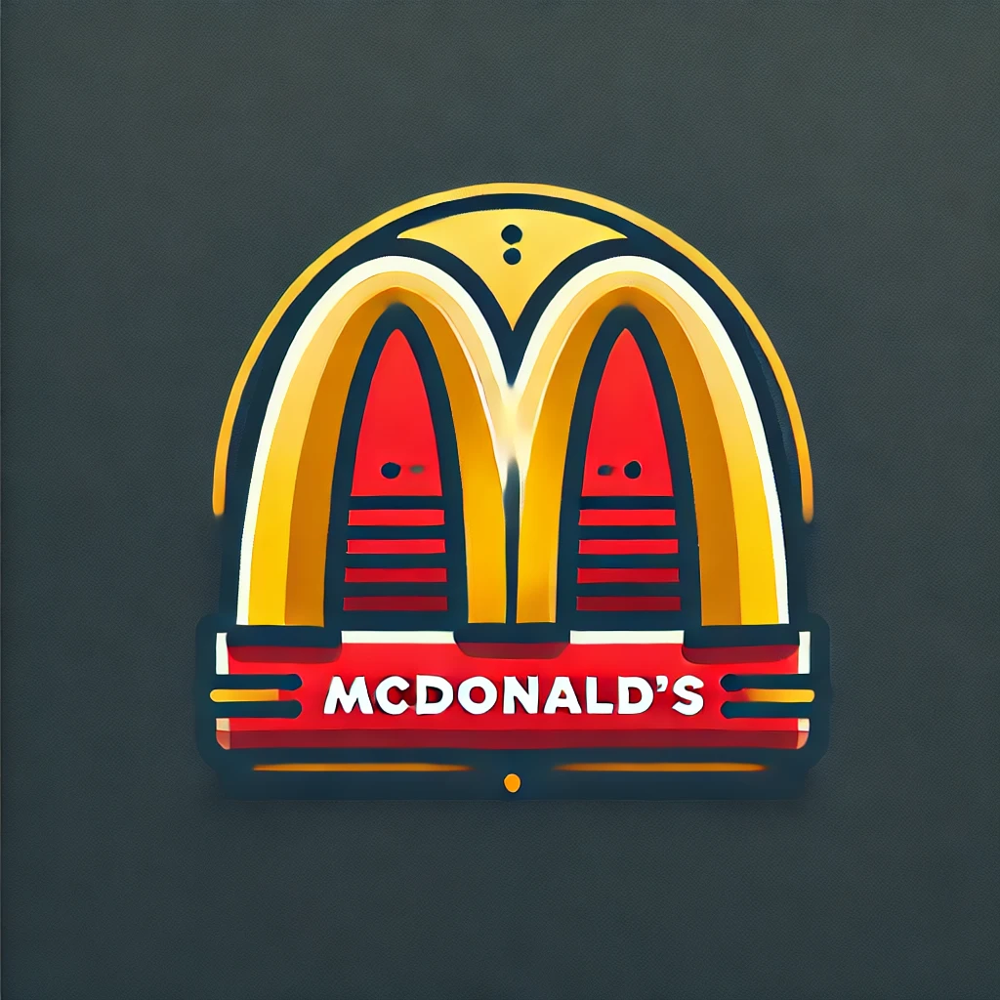

Can Machine Capture a Company’s Essence?
What if AI Designed the World’s Most Iconic Logos?
Logos are more than just visual symbols; they capture the essence of a brand, telling a story in a single glance. Companies like Nike, Apple, and McDonald’s have logos so recognizable that they transcend language and culture. But could artificial intelligence, with its algorithmic precision, create a logo that embodies a company’s identity just as effectively as a human designer?
To find out, I used AI logo generators to design logos for famous brands and then evaluated whether they matched the brand’s established identity. The challenge: AI doesn’t experience the world, doesn’t understand emotions, and lacks the cultural intuition that fuels great branding. Could it still capture what makes a company unique?
AI-Generated Logos for Famous Brands
I fed an AI logo generator the names of major brands—Nike, Starbucks, Apple, and McDonald’s—and let it generate logos based on keywords related to each company. Here’s what happened.
Nike:

AI generated sleek, abstract shapes meant to convey movement, based on the dynamics of the famous Swoosh. The AI designs feel less simple and recognizable and like there are more unncessary details added to the design.
Starbucks:
The AI-created designs featured plenty of green, some coffee beans, and mermaids that look like the starbucks lady. But none captured the exact starbucks mermaid, she looks a bit different here, she actually has a tail.
Apple:
Most AI attempts involved literal apples—some with bites taken out, others with a more tech-inspired look. Most examples including the one above were sleek and modern, none matched the simplicity of Apple’s real logo though.
McDonald’s:

The AI designs knew to use red and yellow, but the resulting logos looked like generic fast-food chains, not exactly like classic Mcdonalds, it almost looks vintage and less modern. It did actually get the recognizable Golden Arches though.
What Worked:
Recognizing Patterns:
AI does a great job recognizing basic elements of branding—color schemes, shapes, and common symbols. It knew that Starbucks used green, Nike should look dynamic, and McDonald’s is red and yellow.
Generating Options Quickly:
An AI can generate dozens of logo variations in seconds, offering a wide range of possibilities that a designer could refine and improve upon.
Technical Execution:
AI-created logos are often sleek and modern-looking, showing how well AI understands current design trends.
What Fell Short:
Lack of Brand Storytelling:
Logos aren’t just shapes and colors—they’re a company’s story distilled into a single image. AI doesn’t understand brand narratives, cultural impact, or emotional resonance. That’s why the Nike Swoosh, which conveys speed and movement, is irreplaceable by AI-generated designs.
Originality Issues:
AI often relies on pre-existing design elements and trends. While it creates new variations, it rarely produces something completely original or unexpected—qualities that make iconic logos stand out.
Emotional Connection:
The most powerful logos evoke feelings—trust, excitement, nostalgia. AI struggles with this because it doesn’t have emotions itself. It can imitate but not feel what makes a logo resonate.
The Role of AI in Logo Design
AI can be a useful tool for brainstorming and rapid iteration, but it lacks the human creativity and storytelling ability that define truly great logos. It can generate solid starting points, but for a logo to capture a company’s essence, a human designer still needs to inject meaning, emotion, and narrative into the design.